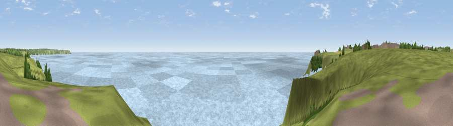

Viewpoint near Lizard
#10833 in England · top 19% of its area beats it · near LizardWhere it is
The exact computed spot (SW 71475 11925). Click the marker for map links.
The view, rendered

A 360° render of this exact spot computed from the terrain model, tree cover and land cover — summer colours, afternoon light, calibrated against photographs of famous viewpoints. Real trees, hedges and buildings will differ in detail.
The panorama
Grey silhouette: terrain skyline in each direction (720 bearings, Earth curvature and refraction included). Dashed green: skyline with trees (+15 m) and buildings (+8 m) as obstacles. Blue strip: how far the ground is visible on each bearing.
Where the view opens
Wedge length = distance to the farthest visible ground on that bearing (vegetation-aware). Rings at 10, 25 and 50 km.
What fills the view
78% water · 21% grassland ·
Angular shares of the visible panorama (visual magnitude), not map area. Landscape diversity 0.25 (0–1 Shannon).
Key numbers
More beautiful places nearby
The staircase of upgrades: each row has a higher view potential than everything closer. Driving times are estimates from straight-line distance, calibrated against real road routing — check an actual route before setting out.
| Place | Direction | Drive | Score |
|---|---|---|---|
| Viewpoint near Cadgwith | NNE · 3 km | ~7 min | 64.6 |
| Viewpoint near Lizard | WNW · 4 km | ~10 min | 65.2 |
| Viewpoint near Mullion | NW · 7 km | ~14 min | 72.0 |
| Viewpoint near Mullion | NW · 7 km | ~14 min | 72.7 |
| Viewpoint near Porthoustock | NE · 13 km | ~24 min | 74.0 |
| Viewpoint near Ashton | NW · 21 km | ~35 min | 81.3 |
| Tregonning Hill | NW · 22 km | ~36 min | 83.0 |
| Rosewall Hill | NW · 35 km | ~54 min | 88.0 |
49.96367, -5.18783 · source: screening · position refined by local search. Computed location — check access rights before visiting.